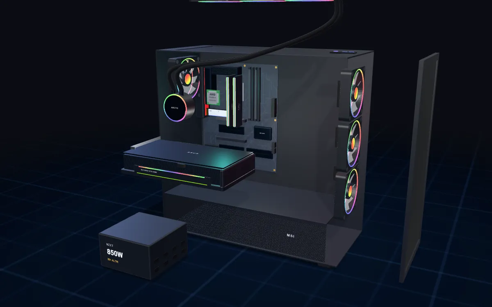

PC Builder with a 3D preview
Web · 3D · Data
A PC configurator that only offers compatible parts — socket, memory type, form factor, GPU length, cooler clearance and PSU wattage are checked both ways — and assembles the chosen build in an interactive 3D scene. About 6,700 products, with prices refreshed daily from epey.com.